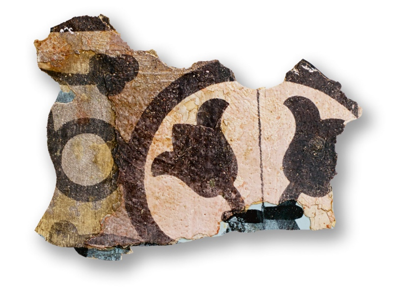
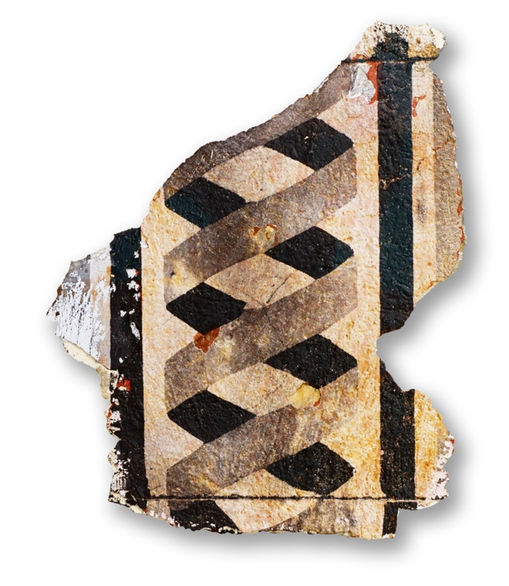
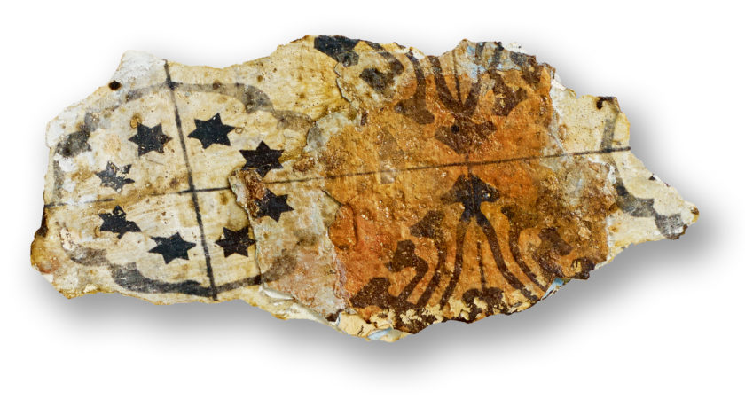
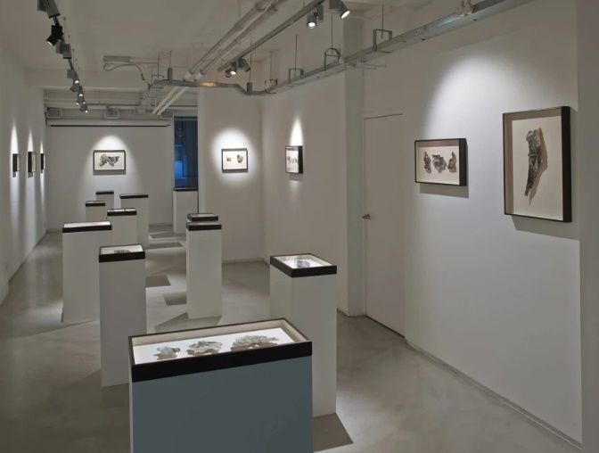

In 2009, the Palestinian artist Steve Sabella returned from London to rent a Palestinian house in Ein Karem from an Israeli settler. Sabella lived for 38 days in a Palestinian home occupied by Israelis since 1948. Feeling unsettled, he tried to make sense of the space by photographing it thoroughly, then collected fragments of paint that were peeling off the walls of the home he was born in, and other houses in the Old City of Jerusalem. He painted light sensitive B&W photo emulsion on the fragments, and printed the images he had taken of them. The work explores the relationship between two realities; one being Israeli colonization and the other being the Palestinian right of return. This is the story that emerges on the surface of the work but the visual palimpsest that unfolds explores, not just the history of the house in Jerusalem, but more profoundly the history of the image itself. As Sabella writes, "I found myself exploring the genealogy of the image."
In this project, illusion and imagination turned into a reality. Do we believe everything we see? Where does the truth come from? Where does the image come from? This is exactly what Georges Didi-Huberman tried to explain about imagination when he said: “Imagination gives us a knowledge that cuts across by its intrinsic potential of montage consisting in discovering in the very place where it refuses the links created by obviated resemblances, links that direct observation cannot discern”.
In his exhibition (38 Days of Re-Collection 2014), Sabella opens a lot of questions about image in its theoretical and technical dimensions through research, comparison and approach, uncovering life under the dust, mostly related to exile, place and imagination, also creating an Atlas for his collection through the anthropology of image and montage as a meta-language and a form of knowledge.
For Didi-Huberman, seeing (to voir) is the way of knowledge (savoir) and can also foresee (prevoir) the historical and political moments that we live. The past and the present relationship underneath the conception of montage, that's what Sabella did in his works by turning back to his roots. His work narrates the features of a personal life that begins with the departure from an occupied city, to put us in a picture of the most important stage, which is the transformations between the birth place and the place in which he moves and resides.
Sabella's artwork in this sense inhabits at once the present (the actual paint-piece) and the past (the intergenerational layers of paint). Similarly, the superimposition of the image of the kitchen [Fig.1] - the window and hanging pots and pans and even a decorative cat figure - on the scraped paint suggests quotidian domesticity. The kitchen becomes the privileged site of food preparation both as a digestive necessity and culinary tradition, while also redolent of sensuous delights and communal rituals, but in contrast to the materiality of the scraped paint, the black-and-white kitchen has the immateriality of a superimposed image, thus forming a simultaneous presence-absence that inscribes a quotidian life haunted by a ghostly past.

Fig. 1 steve sabella. 38 days of re-collection. 2014. 13.2 x 6.1 cm
With 38 Days of Re-Collection, we can notice the images are flattened, obscured, fragmented, blurred and discolored. Their supports are irregular, each being singular, being ripped from walls, ripped from time, opening layers of the past. whether on actual fragments of wall decoration or delivered via photographic images printed on such fragments, showing interiors with tiled floors, which speak of simple ways of turning a house into a home. [Fig. 2 - Fig. 3 - Fig. 4].
This fragmentation became a way of montage that made us think the world creating something different, or creating an Atlas from the point of view of the dialogue between memory, time and space.


Fig. 2,3,4 Steve Sabella. 38 days of re-collection. B&W white film negative (generated from a digital image) printed with b&w photo emulsion spread on color paint fragments collected from Jerusalem's Old City house walls and tiles.
A lot of artists like Brecht in his work journals, adapted the montage as a way of reaction to the historical tragedies of their time, and montage became a resource to observe history to be able to manage the archeology of knowledge. For “38 Days of Re-Collection,2014”, Sabella transformed the anguished personal and collective experience of Palestinian political and geographical displacement into aesthetic sensibility, which for Palestinians began in 1948 with the Nakba: the catastrophe of Israel's violent expropriation of Palestinian territory and the forced exile of approximately 800,000 people from their homeland. By doing that, Sabella adds to an expansive history of artistic and cultural negotiations of this dialectic of geo-political loss and remembrance, subjective dislocation and reconnection.
Georges Didi-Huberman and Brecht lead us to take a stand in face of the images, playing in an anachronistic way to dismount, mount and remount our images, therefore trying to experience the visibility, the temporality and the legibility of the workmanship. Images and montages are not seen as an illusion. They will be associated to imagination and history. Didi-Huberman quotes Brecht, who used the imagination in face of the war images, thus creating distancing with his epigraphs.
In an interview with Wafa Gabsi, Steve Sabella postulates, “We got stuck on the relationship between image and reality. The focus should have been on the relationship between the image and the reality it creates. Understanding this has liberated me from the systemic daily bombardment of how one should look, dream, think and most importantly imagine.” Through the previous saying, Sabella's thoughts intersect with what Didi-Huberman points at in his writing about the images and montages which they will connect with history and imagination to try to find the reality.
Historically speaking, this practice of montage in the arts and the human sciences as a form of knowledge began in Europe during the World Wars according to Didi-Huberman. We can find this form of thinking through montage in the works of Aby Warburg in his Mnemosyne Atlas.
Didi-Huberman wrote on Warburg Atlas: “Mnemosyne is, therefore, a masterpiece the overwhelming epistemological bet, a new form of visual knowledge where everything that is united, gathered, delivers multiplicities of relations that it is impossible to reduce to a synthesis. It is the work of a salutary crisis of the unit and of a necessary crisis of totality, a whole group of tables to gather the parceling of the world of images, beyond any idealist or positivist hope of synthesis .”
When trying to analyses Sabella art works this definition by Didi-Huberman can in line with the Atlas created in (38 Days of Re-Collection) project. In this case, Sabella becomes a visual investigator, researching the origin and function of images. He explores the visual components of the world by looking into the image itself much like in scientific research. He studies images, their characteristics, the connections between them, and their origin by looking at them directly and not in comparison with reality. This has allowed him to discover the infinite realities that are hidden in images. In his work, he photographs from several different angles, after which he creates or reveals new forms. Akin to an archeologist who is intrigued to find fragments from the past in order to make sense of history, Sabella engages in a process of positioning images, like in a visual puzzle which we can notice in his exhibition arrangement. [Fig. 5]

Fig. 5 Photos from Steve Sabella “Fragments” exhibition in Berioni Gallary, London.March 6 – May 10, 2014.
The understanding of Sabella's work represents the most recent chapter in his journey, one that I anticipate will continue to reveal new meanings. The point that Didi-Huberman defines very well in creating the Atlas that does not aim for a form of complete knowledge or to present a total picture, as he writes:
“[The atlas] deconstructs, by means of its sheer exuberance, ideals of unicity, of specificity, of purity, of integral knowledge. It is a tool, not to exhaust in a logical sense every given possibility, but for the inexhaustible opening of possibilities not yet given”.
Creating an Atlas through images as well as montaging and deconstructing them, can carry the artistic creation to a new level of knowledge, and is a way the artists should follow in face of a world invaded by information and technologies. When inspecting an Atlas, the viewers should not distance themselves from the images but discover a critical distance from which to observe them is the greatest thing that can happen to us.